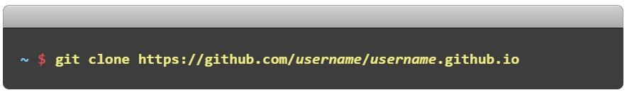
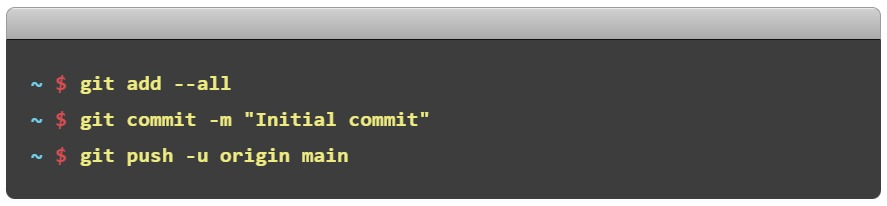
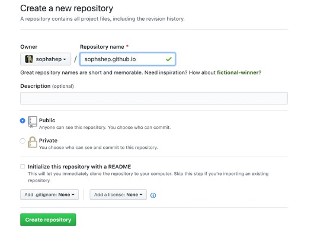
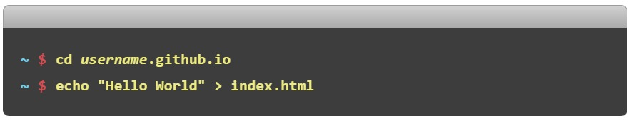
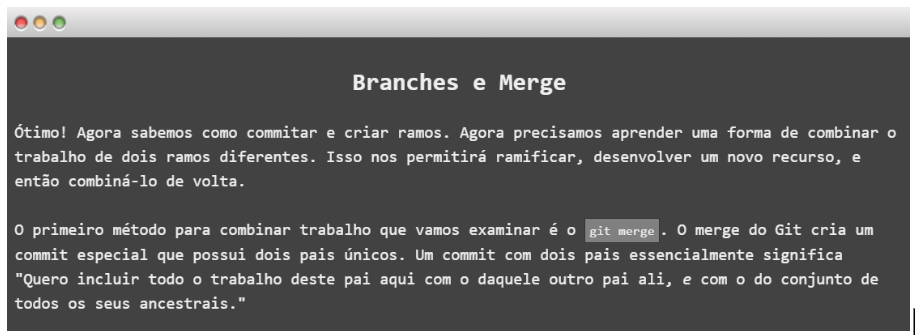
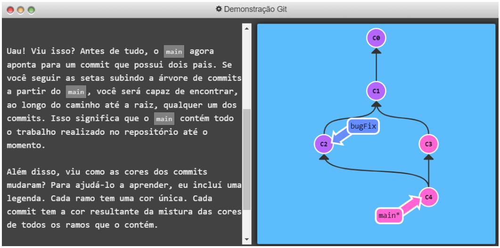

Passo a Passo
- Passo: Crie um repositório
-
Passo: Clone o repositório
Através do um terminal, vá até a pasta onde deseja armazenar seu projeto e clone o novo repositório:
 - Passo: Olá Mundo!
-
Passo: Push it
Adicione, confirme e envie as suas alterações:

Acesse o GitHub e crie um novo repositório público, conforme imagem abaixo:
Entre na pasta do projeto e adicione um arquivo index.html:
… e PRONTO!
Abra um navegador e vá para o seu perfil do GitHub.
Mas quais são as vantagens de utilizar o Git em seus projetos?
Dentre os principais benefícios em utilizar Git, podemos citar:
- Manter o histórico das alterações que são realizadas no código;
- Permite rastrear cada alteração realizada no código;
- Simplificar e possibilitar o trabalho simultâneo entre as equipes;
- Permite criar ramificações, onde é possível criar alterações de forma isolada no código.
Comandos básicos do Git
git help
Exibe as informações de ajuda sobre git e pode ser utilizado quando você tiver dúvidas ou esquecer de algum comando.
git config
Permite ver e atribuir variáveis de configuração do git, geralmente utilizado quando você precisa iniciar a configuração do GIT ou para consultar quais são suas configurações atuais.
git init
Este comando pode ser utilizado para criar um novo repositório do Git ou para transformar um diretório em um repositório do Git.
git clone
Permite clonar um repositório existente. Clonar é basicamente extrair uma cópia completa de todos os dados de um repositório para seu diretório.
git add
Para adicionar algo que foi modificado ou criado, pode ser utilizado para adicionar arquivos e diretórios.
git rm
Para remover arquivos ou diretórios de um repositório.
git commit
Para gravar as alterações do que foi modificado, adicionado ou removido.
git status
Exibe uma lista dos arquivos e diretórios que foram modificados e adicionados no repositório.
git diff
Pode ser utilizado para visualizarmos as alterações efetuadas em cada um dos arquivos modificados.
git checkout
Permite alternar entre os branchs existentes e também resetar arquivos que foram modificados.
git branch
Para gerenciar os branchs. Possibilita criar novos branchs, listar todos existentes e removê-los.
git pull
Este comando mescla as alterações do repositório remoto para o seu repositório local, ou seja, ele traz todas as modificações que foram efetuadas.
git push
Este comando envia as alterações do seu repositório local para o repositório remoto, conforme a branch que está sendo utilizada.
git log
Exibe os logs dos commits efetuados. Este comando disponibiliza diversos parâmetros para detalhar os logs, permitindo visualizar exatamente o que você desejar.
ATENÇÃO!

CHEGOU A HORA DA VERDADE!
Para sabermos se você aprendeu direitinho, vamos jogar um Quiz?